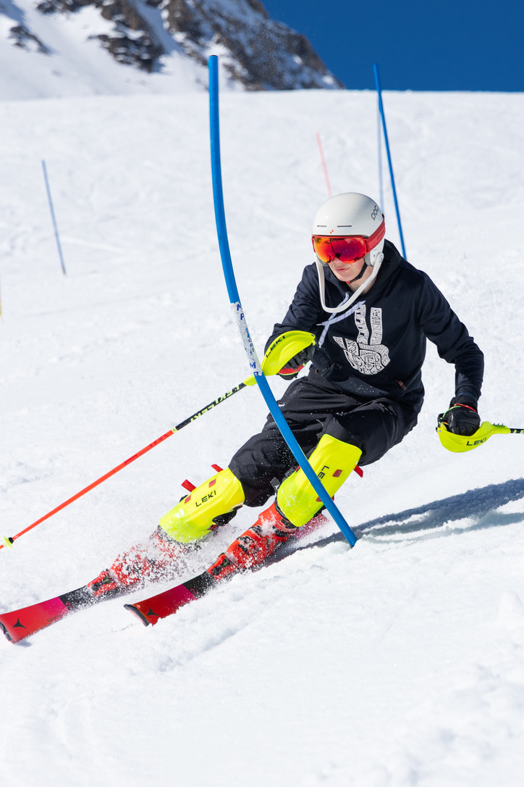

Great Britain · U18 · Slalom & giant slalom
Find the edge.
Commit to the turn.
I’m Luca Finnis-Bernard, a British U18 alpine ski racer, BASI Ski UK Level 2 instructor and Snow Shepherd Pro Deal athlete, racing for Hemel Ski Race Club. I’m always looking for support.
- Race club
- Hemel Ski Race Club
- Qualification
- BASI Ski UK Level 2
- Pro deal
- Snow Shepherd, 50% off
- Best result
- --
- Podiums
- --

Profile
Racing, coaching
and progression.
I’m a British U18 alpine ski racer and BASI Ski UK Level 2 instructor based in the UK. I train and race at The Snow Centre and Snozone, with mountain-racing experience in Tignes.

"Racing, coaching and progression."
I race for Hemel Ski Race Club (HSRC) and teach skiing at The Snow Centre in Hemel Hempstead and Knockhatch Adventure Park. My training combines dry-slope and snow-based race preparation in the UK with mountain-racing mileage in Tignes.
I’m on a Snow Shepherd Pro Deal, which gives me 50% off Snow Shepherd products. I’m always looking for support from brands, businesses and people who want to be part of my racing journey.
Race record
Results.
I’ve recorded 11 races across slalom and giant slalom, with one win, seven podiums and eleven top-ten finishes, across 8 slalom starts and 3 giant slalom starts.
Career to date · sourced from GBSki
Season 2025/26
Training and activity.
My training includes dry-slope and snow sessions, competition preparation, race technique and mountain experience in Tignes.
Equipment
Current setup.
Progression
The journey so far.
My racing and coaching progress, built from confirmed race dates and current roles.
Gallery
On the hill.
Get in touch
Let's talk skiing.
I’m always looking for support, whether that’s product, discounted kit, race-day content, coaching collaborations or local-business partnerships. For coaching enquiries, race collaborations or general messages, email me at contact@lucafinnisbernard.co.uk, reach out on social media, or send a message below.